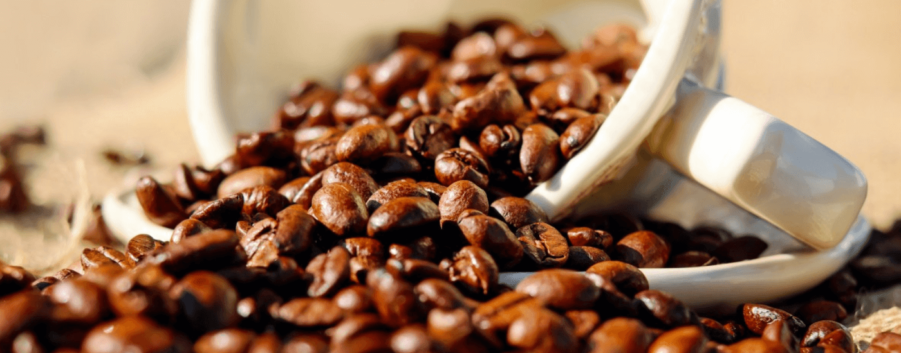
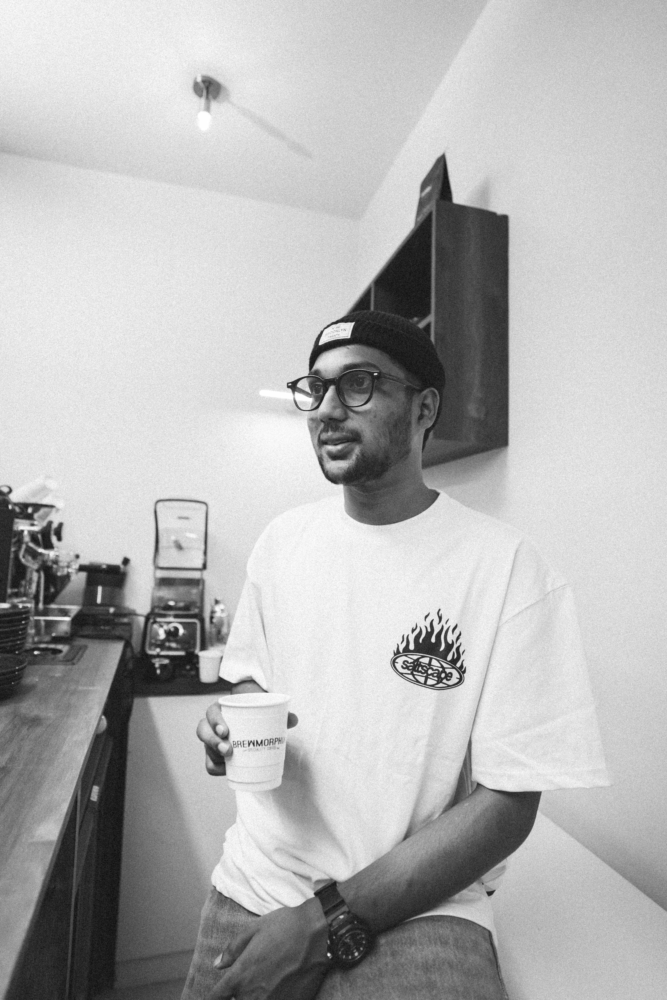

Come for the cup.
Stay for the mood.
A peek at the people, tools and little details that make Brewmorphia feel like Brewmorphia.






SMALL SPACE. BIG COFFEE FEELINGS.MANANCHIRA, KOZHIKODE · KERALA
A peek at the people, tools and little details that make Brewmorphia feel like Brewmorphia.

